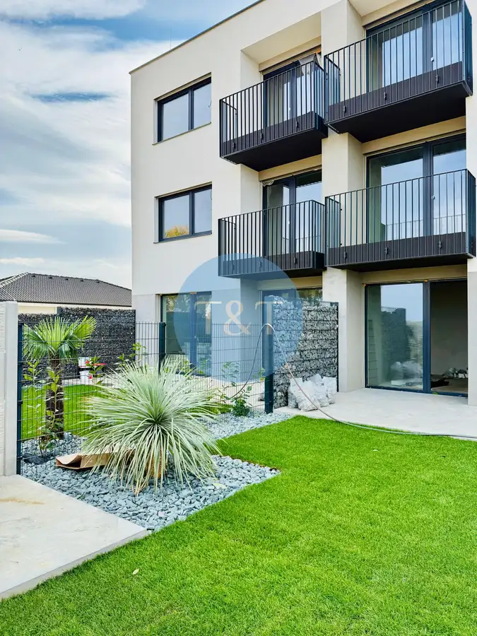
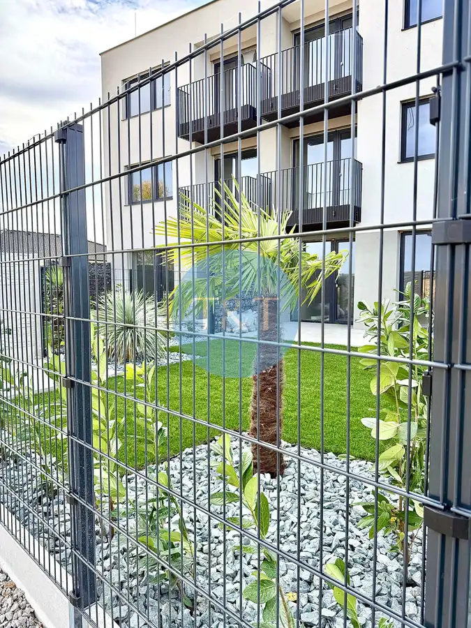
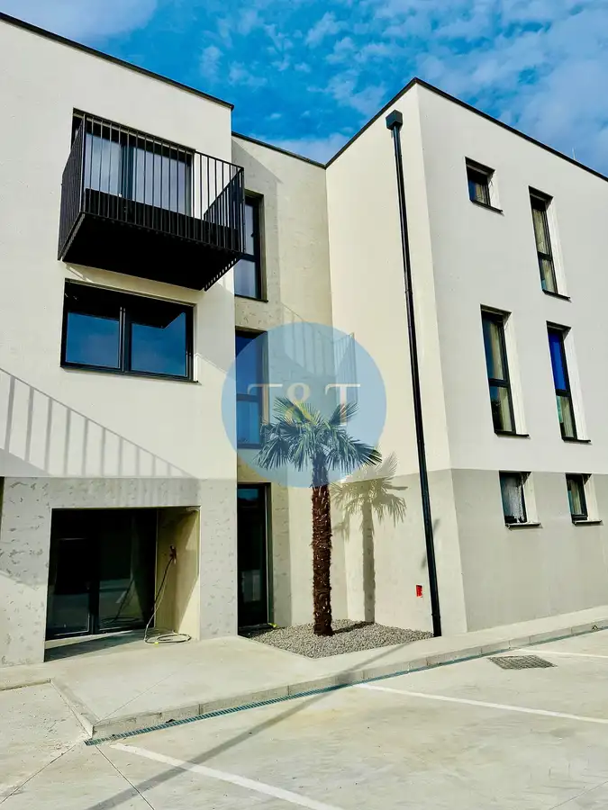
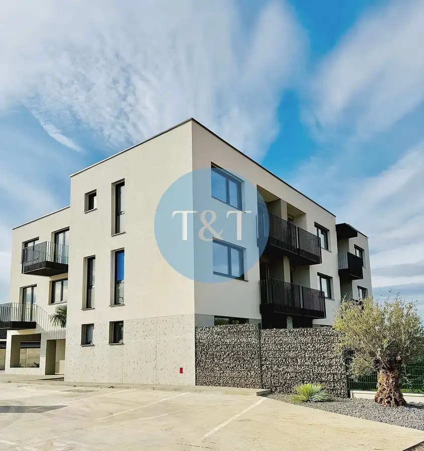
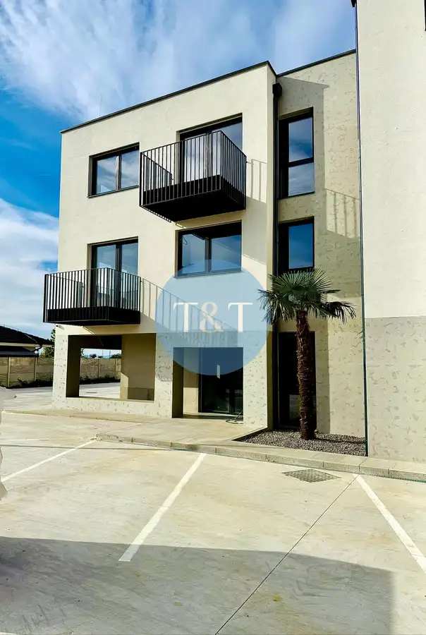

Bez provízie / 2-izbový byt v skolaudovanej novostavbe s balkónom a parkovacím miestom – Košúty
Košúty






- Dispozícia2-izbový
- Plocha54 m²
- Poschodie1. z 2
- StavNovostavba
- Energetická triedaA
O nehnuteľnosti
Realitná kancelária Tom & Tiles Vám ponúka na predaj moderné 2-izbové byty s balkónom a predzáhradkou v exkluzívnej novostavbe v lokalite Košúty, len 4 km od mesta Galanta.Byty sú navrhnuté s dôrazom na funkčnosť, komfort a moderné bývanie v pokojnom prostredí mimo mestského ruchu.Dispozičné riešenie bytu:• vstup / predsieň• chodba• kuchyňa prepojená s obývacou izbou• samostatná spálňa• kúpeľňa s vaňou• samostatná toaleta• balkón• pivničná kobka (cca 2,5 m²)Rozloha bytov: celková podlahová plocha bytov: od 49 m² do 54 m²Štandard a technické vybavenieByty sú k dispozícii v štádiu holobyt alebo na kľúč.Štandardné vybavenie zahŕňa:• bezpečnostné protipožiarne vchodové dvere s viacbodovým uzamykaním• plastové okná s izolačným trojsklom (biela/antracit)• moderný betónový strop – leštený vibrovaný betón• maľovky, vypínače, osvetlenie• predpríprava na klimatizáciu• predpríprava na vonkajšie žalúzie• zásobníkový ohrievač vody (bojler)Byt v štádiu „na kľúč zahŕňa navyše:• interiérové dvere• sanitu• dlažbu, obklady• parketyV prípade záujmu je možné zabezpečiť výber a montáž kuchynskej linky a vstavaného nábytku.Bytový dom a spoločné priestory:kvalitná novostavba s 13 bytovými jednotkamispoločné priestory v spoluvlastníctve: kočikáreň, upratovacia miestnosť, technická miestnosťhliníkové vstupné dvere do bytového domu s elektronickým otváranímelektronický vrátnik a videozvončekkamerový systém (vstupy, kobky, parkovacie plochy)bytový správcaKúrenie a energie:tepelné čerpadloteplovodné podlahové vykurovanieIS: voda, elektrina, kanalizáciaTV a internetParkovanie1 parkovacie miesto je zahrnuté v cene bytu + 1 parkovacie miesto bude pre všetkých obyvateľov s nabíjačkouLokalita – KošútyNovovybudovaná lokalita je ideálnou voľbou pre tých, ktorí hľadajú pokojné bývanie v blízkosti prírody, no zároveň s dobrou dostupnosťou do mesta.V lokalite a okolí:nové detské ihriskopripravovaná polyfunkčná budova (kaviareň, cukráreň, fitness centrum a ďalšie služby)pekáreň, mäsiarstvo, potravinyvidiecka reštaurácia s veľkou záhradou, detským ihriskom a koňmimožnosti voľnočasových aktivít: cyklistika, rybolov, jazda na koni, prechádzky v prírode, výcvik psovCena:byt s parkovacím miestom a pivničnou kobkou: od 123 000 € ( cena od developera) V prípade záujmu o podrobnejšie informácie nás neváhajte kontaktovať. Radi Vám poskytneme všetky potrebné detaily.Mgr. Lukáš Kachlík – 0903 168 440kachlik@ttre.sk
Parametre
- Bezpečnosť
- Kamerový systém, Elektronická brána
- Cena vrátane energií
- Nie
- Druh
- 2 izbový byt
- Dátum zverejnenia
- 28. 01. 2026
- Energetický certifikát budovy
- A
- Podlažie
- 1
- Počet balkónov
- 1
- Počet nadzemných podlaží
- 2
- Rok kolaudácie
- 2026
- Rok výstavby
- 2025
- Stav nehnuteľnosti
- Novostavba
- Telekomunikácie
- Internet, Optická sieť, Telefón
- Typ
- Predaj
- Typ konštrukcie
- Tehlová
- Vybavenie
- Balkón, Vonkajšie parkovacie miesto
- Vykurovanie
- Klimatizacia, Tepelné čerpadlo
- Úžitková plocha
- 54 m²
Kde to je


Mohlo by Vás zaujímať
 PozemokNové
109 000 €EXKLUZÍVNE | Pozemok 377 m² | Bratislava – Rača | Piesková ulica
Rača, Bratislava
377 m²
PozemokNové
109 000 €EXKLUZÍVNE | Pozemok 377 m² | Bratislava – Rača | Piesková ulica
Rača, Bratislava
377 m²
 BytNové
123 000 €Bez provízie / 2-izb. byt v skolaudovanej novostavbe s balkónom a parkovacím miestom – Košúty
Galanta
2-izbový54 m²1. podlažie
BytNové
123 000 €Bez provízie / 2-izb. byt v skolaudovanej novostavbe s balkónom a parkovacím miestom – Košúty
Galanta
2-izbový54 m²1. podlažie
 Komerčné priestoryNové
Cena na vyžádáníOMNIA kancelárie – rôzne veľkosti priestorov + jednoduché parkovanie
Ružinov, Bratislava
590 m²
Komerčné priestoryNové
Cena na vyžádáníOMNIA kancelárie – rôzne veľkosti priestorov + jednoduché parkovanie
Ružinov, Bratislava
590 m²